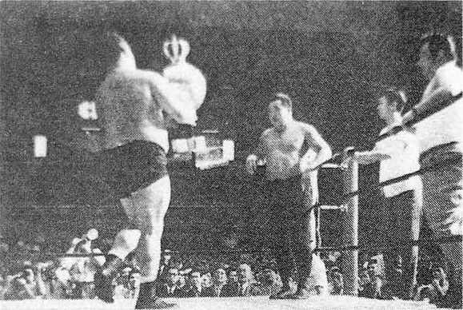
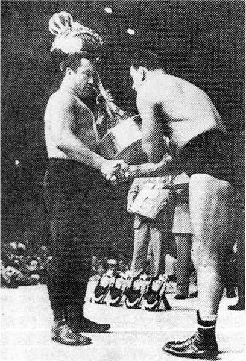

Глава 4
Оцифровано для VSplanet.net
1. Розыгрыш по круговой системе
Май 1959 года. Открылся в Японии 1-й розыгрыш профессиональной борьбы мира по круговой системе.
Этот розыгрыш был состязанием, решающим судьбу Рек То Сана.
Любители профессиональной борьбы не интересовались состязаниями борцов своей страны, а международные соревнования вызывали у них большой интерес.
Нелегко было привлечь к состязаниям первоклассных борцов-профессионалов мира. Но Рек То Сану следовало во что бы то ни стало пригласить их и устроить международные встречи.
Потому что его сегодняшнее положение отличается от вчерашнего. До сих пор он выступал лишь простым борцом-профессионалом, но отныне должен отвечать за судьбу Общества профессиональной борьбы.
Вначале Рек То Сан вынашивал план по организации «Олимпиады профессиональной борьбы», но он был лишен реальности. Поэтому он запланировал ежегодно проводить розыгрыш профессиональной борьбы по круговой системе.
Он решил обратиться к Греду Того с просьбой содействовать этому. Борцы-профессионалы мира ненавидели его как мошенника и злодея, но для приглашения лучших борцов все-таки нужна была его помощь.
Настоящее имя Греда Того—Окамура Кадзуо. Он родился в штате Орегон США, в семье японских иммигрантов. Он слыл в США и Канаде сильным борцом-профессионалом. Его рост не превысил 1 метр 70 сантиметров, но он вел игру так грубо, что любители профессиональной борьбы обзывали его «злодеем века» с ненавистью.
Рек То Сан, сделав его агентом, в течение месяца развернул активную деятельность, чтобы привлечь лучших борцов к розыгрышу по круговой системе. 20 апреля он заключил контракты со спортсменами, которые будут участвовать в розыгрыше.
1-й розыгрыш профессиональной борьбы мира по круговой системе состоялся с 21 мая по 15 июня.
Иностранные игроки все без исключения были сильными борцами, приехавшими из США, Англии и Мексики. Как по мастерству, так и по числу участников этот розыгрыш был международными соревнованиями первого класса. Было решено: сначала 10 игроков состязаются по круговой системе, а потом 4 лучших из них ведут схватку за звание чемпиона.
Игра идет 8 минут на три тура с двухминутным перерывом.
С первого дня соревнований было очень много зрителей. Как предполагалось, Рек То Сан, Торес, Ордега, Атомик добились хороших результатов и вышли в полуфинал.
Посредством жеребьевки решено проводить встречи между Рек То Саном и Атомиком и между Ордегой и Торесом.
Полуфинальная схватка между Ордегой и Торесом не дала результата до третьего тура, и проведена дополнительная игра, но опять было безрезультатно. Тянули жребий и Ордега получил право соревноваться в финале.
Кровопролитной была полуфинальная игра между Рек То Саном и Атомиком.
Когда-то Атомик был боксером. Его кулачный удар считался самым мощным среди борцов-профессионалов мира. Он всегда вел состязание в шлеме, и никто из зрителей не видел его лица. Поэтому его звали «незнакомым чудаком».
Эксперт по профессиональной борьбе Тазуру прокомментировал схватку между Рек То Саном и Атомиком:
«. . . С самого начала схватки Атомик кулачными ударами загнал Рек То Сана в пассивность. Точно и непрерывно он наносил удары по груди и животе партнера слева и справа. Рек То Сан с первых минут состязания отчаянно защищался от ударов, пытаясь выйти из пассивности. Атомик загонял соперника в угол, нанося ему удар по колену и плечу. В критический момент раздался звонок.
Начался второй тур. Атомик, как прежде, продолжал наносить Рек То Сану кулачные удары. Он сделал мощный прямой удар правой рукой. В тот миг Рек То Сан проворно увильнул от удара, в результате чего стоявший за ним судья на ковре получил удар по подбородку и упал на пол площадки. Временно заменил его Сречес. И в третьем туре Атомик наносил Рек То Сану ураган кулачных ударов. Выжидавший удобного случая, Рек То Сан дал противнику режущие горизонтальные удары. Атомик почувствовал головокружение. Не упустив шанса, Рек То Сан поднял его над головой и выбросил за площадку. Схватка продолжалась за рингом.
Атомик с трудом поднялся на площадку. Рек То Сан свалил его на пол и, сидя на нем, снял с него шлем и бил кулаком в лицо. Окровавилось лицо Атомика. Не смея сопротивляться, он обхватил лицо и поднялся, шатаясь. Рек То Сан наносил ему кулачные удары.
Судья на ковре Сречес объявил Рек То Сану нарушение правил. . .»
Он протестовал, но судья не внимал его протесту. Тот показал Рек То Сану штрафную дощечку и объявил победу Атомика по нарушению правила соперником. Здесь таился гнусный замысел лишить Рек То Сана возможности иметь первое чемпионство.
Однако этот замысел не осуществился. Атомик из-за обильного кровотечения воздержался от дальнейшего состязания. Таким образом, вышли в финал Рек То Сан и Ордега.
В финале выиграл Рек То Сан дожимом плеча соперника.
Рек То Сан завоевал звание чемпиона.

Розыгрыш по круговой системе вызвал неожиданную сенсацию. По окончании розыгрыша поступили в адрес Общества профессиональной борьбы Рек То Сана заявления с просьбой организовать состязания в разных местах Японии. Он устраивал турниры для подбора борцов на международные соревнования и организовал 8 августа выездные игры. За это время проводились состязания около 60 раз и число зрителей достигло 600 тысяч человек.
Не только со всех концов Японии, но и из разных стран Латинской Америки и Азии, в том числе из Индии, поступали заявления с просьбой проводить там соревнования.
В ходе проведения упомянутых турниров Атомик бросил вызов Рек То Сану, раскаявшись в своем воздержании от состязания из-за кровотечения. Он домогался чемпионства, приобретенного Рек То Саном на 1-м розыгрыше профессиональной борьбы.
Атомик, скрыв в шлеме нож, бил головой и кулаком Рек То Сана, яростно нападая, но стал на колени, получив режущий удар правой руки Рек То Сана. Состязание кончилось со счетом 1:0 в пользу Рек То Сана.
С 15 апреля по 13 мая 1960 года в крупных городах Японии состоялся выездной 2-й розыгрыш профессиональной борьбы мира по круговой системе.
В нем участвовали 14 игроков: «лев»—Лео Номерини, «человек-хребет»—Хонбре Монтана,
«орел»—Сани Майяс, «злодей века»— Гред Того, «немецкий орел»—Ханс Хелман и др.—из-за границы всего 10, Рек То Сан, Тоёнобори, Эндо и Ёсимура—всего 4 из Японии.
Состязания с первого дня проводились ожесточенно. Иностранные игроки были борцами, которые не хотят уступить другим первенство. Соревнования продолжались целый месяц и вышли в финал Рек То Сан и Номерини. У первого были результаты 8 побед и 1 ничья, у последнего—10 побед, 1 поражение и две ничьи.
Финальное состязание шло 13 мая в спортзале в Токио: на три гейма без ограничения времени.
Спортзал был переполнен зрителями до отказа.
Вызвало большой интерес у любителей профессиональной борьбы противоборство режущего удара каратэ Рек То Сана и «убийственного тарана» Номерини. Мощь «убийственного тарана» так велика, что он нанес поражение «Зевсу профессиональной борьбы мира» - Ру Тхезу, который подряд 938 раз выиграл в состязаниях. Так бахвальство Ру Тхеза—добиться победы подряд 1000 раз—было разбито, натолкнувшись на этот прием.
Бывший когда-то регбистом, он снарядом налетал на противника и отнимал мяч. Этот прием он применил к профессиональной борьбе. Сосредоточив всю тяжесть закаленного 128-килограммового туловища на плече, он бросается снарядом на соперника. Отведав этот прием, любой игрок, говорят, не в состоянии устоять: улетает за пределы площадки и сломается голова или ребро. Поэтому борцы-профессионалы боялись встречи с Номерини.
И на 2-м розыгрыше профессиональной борьбы мира по круговой системе Номерини без остатка проявил мощь этого «убийственного тарана».
Первой жертвой этого приема оказался Хонбре Монтана. Вес его, названного «человеком-хребтом», составляет 158 килограммов. Этот великан, натолкнувшись на «убийственный таран» Номерини, улетел за ринг. Образовалась трещина на ребре Монтаны, потерявшего сознание.
Второй жертвой был Ёсимура. Он тоже, как и Монтана, попался на этот прием и рухнулся на бетонный пол вне площадки. При падении у него сломались два ребра.
Третьей жертвой стал «злодей века»—Гред Того. Через четыре минуты он попался на «убийственный таран» и свалился на пол, харкнув кровью.
Почти все игроки, состязавшиеся с Номерини, потерпели жестокое поражение, попавшись на этот прием.
Рек То Сан тоже потерпел поражение 8 лет назад, попробовав «убийственный таран». Тогда он твердо решил когда-нибудь взять реванш. И вот они снова встретились в этом финале. Схватка была ожесточенной с самого начала.
— «Нате!»—с криком первым пустил в ход свой прием Рек То Сан. Номерини, пиная правой ногой, обвил шею соперника.
Толстая нога Номерини давила артерию на шее Рек То Сана. Последний стиснул зубы. Он намеревался выйти из удержания, обеими ногами ударяя пол площадки, но нога Номерини, обвившая его шею, все сильнее зажимала. Он чувствовал головокружение. Нога Номерини задела за канат. Судья кричал: «Брэг» (отойди). Номерини разжал ногу, обвившую шею соперника, и смеялся хладнокровно. Его смех как бы говорил: «Налетай с любой стороны».
Номерини непрерывно бил Рек То Сана. Последний, избегая удара, внезапно ударил в шею противника. Номерини, схватив шею, катился по ковру.
Рек То Сан дважды нанес режущий удар каратэ. Номерини уклонился в сторону каната. Атакующий преследовал его, пытаясь продолжать удар. Вдруг Номерини, используя откат каната, налетел на соперника.
Удар был такой чувствительный, что Рек То Сан чувствовал головокружение и упал на колени. Старался встать с места, но не слушались ноги. Попал он на излюбленный прием Номерини «удержание крестом ног». Стиснув зубы, Рек То Сан невероятными усилиями встал, чтобы ускользнуть в сторону каната. Но Номерини опять набросился на него снарядом. Рек То Сан свалился на пол и первым лишился одного балла.
Раздался звонок, извещающий о начале второго тура. Рек То Сан еще совсем не пришел в себя. Слегка шатаясь, он подошел к Номерини. Последний, не упустив шанса, налетел на партнера. Почти все зрители закрыли глаза. В следующий момент зрители, открыв глаза, видели, как Рек То Сан обрушивает на соперника шквал перекрестного огня.
От удара «справедливой правой руки» Рек То Сана у Номерини разбился нос в кровь. Рек То Сан делал последнюю ставку на режущий удар каратэ. Он нанес изо всех сил мощные режущие удары по плечу и шее партнера. Одиннадцатый удар заставил шататься гигантское туловище Номерини. Но тот, пользуясь откатом каната, снова набросился на соперника. Рек То Сан нанес ему сокрушительный горизонтальный удар. Номерини, как громадное дерево, свалился с грохотом на пол. Рек То Сан принялся за дожим. Итак, Рек То Сан завоевал один балл, осилив соперника на обе лопатки. Счет—1:1.
Третий тур был розыгрышем духовной силы и энергии.
Номерини, захватив за «справедливую правую руку» Рек То Сана, рывком притащил его и сильно бил закаленным огромным туловищем. Рек То Сан плюхнулся, но тут же с трудом встал, шатаясь. В этот момент Номерини применил излюбленный прием—«убийственный таран». В критический момент Рек То Сан проворно увильнул от удара. Номерини летел, словно снаряд, меж канатами и рухнул вверх ногами на бетонный пол за рингом. Он потерял сознание и больше не мог подняться. . .
В то же время и Рек То Сан упал на ковер навзничь. Оказалось, на лету Номерини правой ногой сильно ударил в бок Рек То Сана. Один борец лежал за рингом, другой—на ковре. Судья-арбитр начал считать. Рек То Сан еле пришел в себя и поднялся. Но Номерини не мог встать.
Итак, Рек То Сан дважды завоевал чемпионство на розыгрыше профессиональной борьбы мира по круговой системе. Запланированный Рек То Саном 2-й розыгрыш профессиональной борьбы мира по круговой системе принес сногсшибательные результаты и получил признание как мировые соревнования.
Таким образом, Рек То Сан упрочил свое положение как короля профессиональной борьбы мира и выступил как организатор состязаний профессиональной борьбы.
2. Разбитый орден
К закату солнца один мужчина посетил дом Рек То Сана. Это был Ямада. Он нажал кнопку.
Отворилась дверь и из комнаты вышел Ёсимати.
— Господин Рек То Сан ждет вас. Войдите, пожалуйста.
В середине просторной приемной стоял круглый стол, на который уже поставлены две бутылки коньяка «Наполеон» и тарелки с сосисками и другими блюдами.
Трое—Рек То Сан, Ёсимати, Ямада—сели за стол.
Рек То Сан налил бокалы и сказал:
— Господин Ямада, завтра, 30 июля, давайте устроим банкет в честь открытия «Ректосановского дворца спорта». Пожалуй, не встал бы этот дворец без вашей помощи. Действительно вы прилагали огромные усилия для его строительства. Я искренне вам благодарен.
— Что вы говорите! Мне совестно, что я не смог закончить строительство пораньше и, не завершив начисто строительные работы, нам пришлось устроить банкет,—ответил извиняющимся тоном Ямада.
Но без помощи Ямады невозможно было бы соорудить «Ректосановский дворец спорта».
Рек То Сан начал строить этот дворец, вложив 360 миллионов иен. Надзирателем стройки он назначил бывшего борца. Но этот человек был несообразительным и к тому же не проявлял активности в работе. Под видом надзирателя он зачастил в кабаре, особенно в ресторан, содержаемый Азумахудзи. Так топтало на месте строительство, и Рек То Сан уволил его. В это время на подмогу Рек То Сану пришел Ямада, который содержал небольшое транспортное предприятие. Он—36-летний холостяк, большой любитель профессиональной борьбы. Он любил особенно борьбу Рек То Сана. Почти три года вплоть до завершения сооружения «Ректосановского дворца спорта» он неотступно находился на стройке и форсировал работы.
К 10 часам вечера Ямада встал с места.
Рек То Сан спустился на лифте до первого этажа и проводил его.
После провода Ямады Рек То Сан сразу же поднялся на 8-й этаж. Войдя в спальную, он лег на кровать и закрыл глаза, но не мог заснуть. Не было такого радостного дня, как сегодня.
Перед глазами всплывали сцены 3-го розыгрыша профессиональной борьбы мира по круговой системе, состоявшегося в июне, и схватки с Гредом Антонио на первенство мира сильнейших борцов.
3-й розыгрыш профессиональной борьбы мира по круговой системе проходил в крупном масштабе и вызывал бурный отклик. На этих соревнованиях Рек То Сан победил всех сильных соперников и вновь продемонстрировал престиж «короля» мировой профессиональной борьбы.
В частности, встреча с Гредом Антонио пользовалась большой популярностью. По прибытии в аэропорт Ханеда он имел пресс-конференцию. Японские любители профессиональной борьбы впервые видели такого гиганта. Этого великана с бакенбардами называли «мужчиной из тайги». Его вес составлял 240 килограммов, рост—1 метр 93 сантиметра.
Он силач и любитель водки. Он не опьянел, выпив 12 бутылок 50-процентной водки без закуски. Этот обжора уничтожал за один присест 4,5 литра молока и 3 килограмма жареной говядины.
В силе с ним не равнялся никто из борцов-профессионалов мира. Сразу же после приезда в Японию он продемонстрировал свою силу, чтобы завоевать популярность.
На площади перед Токийским домом он таскал три 8-тонных автобуса, соединенных стальным канатом (в первом автобусе сидели 50 пассажиров). 5000 с лишним человек смотрели это зрелище. Никто не верил, что борец может таскать эти крупные автобусы, но он таскал.
Чудовищная сила Греда Антонио играла большую роль в пропаганде упомянутых международных соревнований.
Чтобы монополизировать популярность зрителей, Антонио вне правил вел состязание одновременно с тремя борцами-японцами. Он всех троих выбросил за ринг. Они не смогли встать, и Антонио выиграл. Этот «мужчина из тайги» бросил вызов Рек То Сану в попытках отнять у него звание чемпиона на первенстве мира сильнейших борцов-профессионалов. Зрители затаили дыхание, опасаясь, как бы не улетел Рек То Сан за пределы площадки. Однако состязание кончилось победой Рек То Сана со счетом 2:0.
На следующий день, 30 июля в торжественной обстановке состоялся банкет в честь открытия «Ректосановского дворца спорта».
На банкете присутствовали многочисленные люди, приехавшие со всех концов Японии. Участвовали в нем видные представители политических, общественных, печатных, художественных и спортивных кругов.
Рек То Сан встречал гостей, стоя у входа в банкетный зал и пожимая каждому руку.
Снимал банкет оператор «Японского телевещания».
В конце банкета Общество Красного Креста Японии вручило Рек То Сану орден, оценивая заслуги его, внесшего весомый вклад в дело этого Общества. Для него это был первый в своей жизни орден.
После вручения ордена гости выступили с поздравительной речью.
Минуло 6 часов вечера, когда гости, расставшись с хозяином, вернулись.
Борцы Общества профессиональной борьбы, принимавшие гостей, начали в зале выпивать пиво. Рек То Сан, поблагодарив их за услуги, разрешил им напиться. Причем он распорядился на время прекратить выпивку в 7 часов и просмотреть телевизионную передачу.
К 7 часам он кричал ребятам, выпивавшим пиво:
— Принеси-ка телевизор в зал! Говорили, что сообщают о церемонии вручения ордена в час информации. . .
Один молодой борец встал с места и вышел из зала. Вскоре он принес телевизор и поставил у окна.
Борцы ватагой сбежались и сели перед телевизором.
Рек То Сан, приколов орден на груди, занял место в переднем ряду. До сих пор он не раз получал похвальные грамоты, но орден-то получил первый раз, так что он от радости то и дело исподтишка поглядывал на блестящий на груди орден и улыбался.
Начали передавать хронику.
На экране появились буквы «Спорт Рек То Сана».
Раздавались возгласы среди сидевших перед телевизором. На экране показаны внешний вид «Ректосановского дворца спорта» и его внутренние сооружения, потом лица участников банкета в честь открытия дворца и наконец ход банкета. Показана и сцена выступлений с поздравительной речью на банкете. Потом должна была следовать церемония вручения ордена. Но в чем дело?
Не передали долгожданной сцены вручения ордена.
Смотревший в телевизор Рек То Сан крепко сжал бокал в руке, а потом бросил его на пол.
— Нет ли здесь режиссера «Японского телевещания»?—оглядывал весь зал Рек То Сан.
Напуганные люди вышли из зала один за другим. Режиссер этого телевещания по профессиональной борьбе тоже собирался уйти, пятясь.
— Эй, ты куда?! Иди сюда!—крикнул ему Рек То Сан.
Режиссер, понурив голову, подошел к Рек То Сану.
— Подлец, почему вычеркнул самое главное—церемонию вручения ордена?—дрожала правая рука у Рек То Сана.
— Господин Рек То Сан, узнаю, в чем дело, у телевизионной станции. Я не успел посмотреть, разговаривая с оператором,—трясся от страха режиссер.
— Эх, мерзавец, сообщил, что я не присутствовал? Не надо узнать у станции. Уже поздно. Кто вычеркнул? Ты?
— Нет. Как это я сумею. . .
— А кто вычеркнул? Кто?!
— Не знаю.
— А кто знает, если не режиссер! Паршивые мошенники!—крикнул Рек То Сан сотрясающим весь зал голосом.
Он захватил за шею режиссера, поднял его в воздух и бросил на экран телевизора.
Режиссер бился головой об экран и падал вверх тормашками. С грохотом разбился телевизор на куски.
«Эти двуликие японцы обманули меня!»
Рек То Сан сорвал с груди орден и бросил на пол. Орден разбит вдребезги.
Подняв голову, он взглянул на потолок зала.
Окаменев, словно скала, он неподвижно стоял. У него по щекам струились слезы. Он ничего не видел, не заметил, что Танака Беэтаро вошел в зал. Тот поднял руками сваленного режиссера и вышел.
Рек То Сан погрузился в неуемное одиночество. В зале, где недавно оживленно веселились люди, не было ни одной души. Он глубоко вздохнул. У входа мелькнула какая-то фигура. «Кто это—Ёсимати? . . Нет, тогда кто он? Танака Беэтаро? Тоже нет. А кто же он? Тоёнобори? Нет. Тогда что это? Галлюцинация? Нет, не галлюцинация».
Тот мужчина все так стоял.
— Син Рак!—слышался знакомый голос.
Звучало его настоящее, корейское имя.
Мужчина вошел в зал. Это был Кан Сын Мин—хозяин корейского ресторана.
— Брат Кан!
Рек То Сан уткнулся лицом в грудь подошедшего Кан Сын Мина.
— Брат Кан, японцы—это людишки, недостойные доверия. Не знал я, что они обманут меня. . .
— Син Рак, только теперь ты понял это?—сказал Кан Сын Мин упрекающим тоном.
— Знал я. Но это же чересчур. . . Досадно и обидно.
Кан Сын Мин усадил Рек То Сана на диван.
— Син Рак, наоборот, дело получилось неплохо. Хорошо, что не показана на телевизионных экранах церемония вручения ордена. Зачем тебе японский орден? Тебе надо получить орден Родины,—спокойно уговорил его Кан Сын Мин.
— Разве достоин я ордена Родины? Не упрекнула бы она меня. . .—покачал головой Рек То Сан.
— Син Рак, наша Родина снисходительна. Она, возглавляемая великим вождем Маршалом Ким Ир Сеном, уверен я, окружает тебя родительской теплотой.
Рек То Сан безмолвно вытирал слезы.
— Син Рак, как я тебе сказал когда-то, нельзя забывать, что мы—корейцы, где и чем мы ни занимаемся. Ни на минуту! . .
Кан Сын Мин закурил и продолжил:
— Син Рак, на днях мой друг поехал на Родину. Я просил его узнать, здорова ли твоя семья и обязательно передать ей о тебе, если она здорова. Ведь твой старший брат Хан Рак был знаменитым борцом. Так что если он жив, то, может быть, работает в области спорта. И я попросил моего друга узнать в первую очередь о нем.
— Большое вам спасибо. Но там. . .
С течением времени Рек То Сан все ближе воспринимал сердечность и внимание Кан Сын Мина, как у родного брата.
— Интуиция подсказывает мне, что здоровы все члены твоей семьи. И жена, и дочь твоя. . .
Отворилась дверь и вошли люди. Кан Сын Мин прервал разговор.
Это были популярный певец модных песен Касуга Хатиро, известные бейсболисты-профессионалы питчер Канеда Сёити и бьющий Харимото. Все они были корейцы, проживающие в Японии.
— Син Рак, давай устраивать между соотечественниками банкет в честь открытия «Ректосановского дворца спорта».
— Давайте так сделаем,—встал с дивана Рек То Сан.
На его лице исчезло печальное выражение, и оно засияло, как яркий день.
3. Теплые, родительские объятия
Погас свет в окнах многоэтажного дома, где живет Рек То Сан. Но светит лампа в одной комнате 8-го этажа. В этой просторной приемной одиноко сидит на диване Рек То Сан и читает письмо от дочери на Родине.
«Папа!
Я впервые от роду так зову папу. . .»
Так начала свое письмо дочь.
Рек То Сану чудилось, что он видит сон. Он в последний раз видел свою дочку, когда ей было три года.
В письме было сказано, что жена умерла по болезни. У него щемило в сердце от угрызения совести.
Перед его взором живо вставало незабываемое прошлое: он, юноша, гуляет с девушкой, будущей женой, на пляже у побережья Рюкдэ, в день свадьбы, сидя рядом с ней перед большим столом, получает благословение от сельчан. Когда ему шел 18-й год, японцы забирают его в команду борцов «Нисёносэки». Молодая жена следует за ним до вокзала Ренму и провожает со слезами на глазах. . .
Рек То Сан почувствовал острую боль в сердце, будто вонзил в него нож. Как она обиделась бы на тебя, такого бессердечного. Но теперь уже напрасно раскаяться и просить прощения.
У него на глаза навернулись слезы. Письмо открыло перед ним картину последней минуты жизни жены.
Перед смертью она взяла руку дочки и, как бы шепча, тихо сказала:
— Твой папа живет в Японии. . . . Он вернется на Родину, если не умер. Угоняемый японцами, он кричал: «Жди меня. Непременно вернусь». Мама, веря в слова твоего отца, ждала не дождалась, но . . . так и не увидев его . . .
Если вернется папа, скажи ему, что мама с нетерпением ждала его до последнего дыхания. . .
Жена не смогла досказать и закрыла глаза.
Рек То Сан представлял себе облик дочери, которая ждет в порту возвращения отца каждый раз, когда причаливает судно с соотечественниками—репатриантами из Японии на борту.
Рек То Сан глубоко вздохнул, не отрывая взгляд от письма. Там было написано:
«. . . Дядя сказал, что он получил от Кан Сын Мина подробное известие о тебе, что ты живешь в слезах, тоскуя по Родине. Он сообщил, что в отличие от других ты не можешь вернуться на Родину, хотя так желаешь. . .»
«Жив и здоров старший брат Хан Рак! Правильно было предсказание Кан Сын Мина»,—думал Рек То Сан и продолжал читать. Далее дочь писала о заботе великого вождя о Рек То Сане и его родных.
. . . Великий вождь очень беспокоился о том, что Рек То Сан, проживая в Японии, тоскует по Родине, не может вернуться, что он, будучи корейцем, вынужден назваться японским борцом. Он сказал, что такую горькую судьбу навязала Рек То Сану японская реакция, и отметил, что надо заботиться о его родных на Родине.
Родной вождь распорядился обучать дочь Рек То Сана в Пхеньянском физкультурном институте, чтобы она выросла, как отец, замечательной спортсменкой, а его старшему брату Хан Раку дать возможность работать научным сотрудником в Академии физкультурных наук.
Рек То Сан проливал горячие слезы, тронутый большой любовью вождя-отца.
Если бы не было теплых объятий родного вождя, его дочь не избежала бы судьбы беспризорной сироты, выброшенной за борт общества и обреченной на голодную смерть. Он всеми фибрами души ощущал, как теплы, широки и дороги объятия Родины, объятия вождя.
Забота и любовь родного вождя не ограничились этим.
Он, посмотрев фильм, который показывает, как Рек То Сан, победив сильнейших борцов капиталистических стран, продемонстрировал мощь короля профессиональной борьбы мира, похвалил, что в трудных условиях чужбины тот живет с чувством достоинства корейской нации, и добавил, что эта кинокартина может вызвать у зрителей национальную гордость.
Какая это большая вера и великая любовь!
У Рек То Сана клокотало сердце от волнения.
«Уважаемый вождь, большое Вам спасибо!»—крикнул он дрожащим голосом. Ему не спалось. Он сел за руль машины и направился в корейский ресторан у вокзала Коданда.
Хозяин ресторана Кан Сын Мин удивился, увидев Рек То Сана, навестившего его ночью.
— Братец, . . . я . . . этот Рек То Сан, нет, Ким Син Рак вновь родился.
Сильное волнение мешало ему рассказать как следует.
Он дал ему письмо от дочери.
— Пришло оно наконец-то. . .
— Братец, как мне оправдать эту большую любовь и заботу.
— Надо оправдать достойно,—крепко сжал руку Рек То Сана Кан Сын Мин.
— Вместо упрекать меня, Ким Син Рака, бросившего Родину, она тепло обнимает. . . Как я могу отвечать на высокое доверие великого вождя.
Подняв влажный взгляд, Рек То Сан с благоговением взирал на западное небо.
— Там, на краю этого неба, наверное, наша Родина, где работает великий вождь.
— Син Рак, не забывай, что Родина всегда заботится о нас. Где бы ни находились, мы всегда должны иметь чувства достоинства и гордости—жить под руководством великого вождя. Кан Сын Мин положил руку на плечо Рек То Сана.
Оба стояли рядом во дворе и долго взирали на западное небо, забыв, что уже глубокая ночь.
На следующий день, ранним утром Рек То Сан вызвал к себе Касаяму и Ёсимати. До сих пор он никогда не пригласил людей к себе домой так рано. Когда они вошли в приемную, хозяин сказал:
— Прошу вас помогать мне приобрести легковую машину.
Ошеломленные неожиданными словами, они глядели друг на друга.
— Ведь у вас спортивная машина «Бенц» и автомобиль «Розслойз». . .—ответил с недоумением Ёсимати.
— Она нужна мне срочно. Я говорю о машине высшего класса, а не о простой машине. Если ее нет в Японии, то прошу достать ее в Западной Германии, в Англии. . . в любой другой стране мира.
— А за какую цену? . .
— О цене не беспокойтесь. Заплачу, сколько требуют. . . Найдите легковую машину высокого, нет, высшего класса. И я постараюсь узнать . . .
— Поняли.
Касаяма и Ёсимати вышли из приемной.
После их ухода Рек То Сан тут же взял трубку и позвонил в автомобильную компанию и специальные учреждения по исследованию автомашин.
Рек То Сан сделал все, что в его силах, чтобы приобрести легковую машину высшего класса.
Апрель следующего года.
По случаю 50-летия со дня рождения великого вождя Маршала Ким Ир Сена Рек То Сан прислал ему в подарок легковую машину высшего класса вместе с письмом, в котором поклялся быть преданным ему.
4. Я — кореец (1)
Вступая в 1962 год, известные борцы-профессионалы, претендуя на «престол» этой борьбы, наперебой бросили Рек То Сану вызов.
«Дьявол» За Дестройя, «кровопийца» Хурет Браши, «стальной мужчина» Ру Тхез, «красный шлем» Атомик, «злодей века» Гред Того, Майк Шаф, Кира Гоарский, Хурет Атокингс, Дек Хаттон . . . все они были сильными спортсменами. Особенно ожесточенными были схватки с «дьяволом» За Дестройя и «кровопийцей» Хуретом Браши.
28 марта 1962 года Рек То Сан отправился в США для участия в соревнованиях на первенство мира, устраиваемых WWA в Олимпийском доме в Лос-Анжелесе.
Соревнования за звание первого чемпиона мира, организуемые WWA, состоялись в 1961 году. Инициатором выступила Ассоциация профессиональной борьбы мира. В этих состязаниях участвовали 12 борцов. Тогда победу одержал Браши, и он стал первым чемпионом в соревнованиях на первенство мира, устраиваемых этой организацией. Рек То Сан бросил Браши вызов.
По прибытии в Лос-Анжелес Рек То Сан первым делом посетил Олимпийский дом, чтобы ознакомиться с площадкой для борьбы.
Там корреспонденты США сыпали Рек То Сана вопросами.
Вопрос—«Господин Рек То Сан, наверное, этот дом оставил в вас глубокое впечатление?»
Ответ—«Да, так и было. Именно в этом доме я победил Ру Тхеза, слывшего «Зевсом профессиональной борьбы», «стальным мужчиной», «героем США, не знающим поражений», и завоевал звание чемпиона мира по профессиональной борьбе. Это событие живо воскресает в моей памяти, как вчерашнее».
Вопрос—«Откровенно говоря, тогда жители Лос-Анжелеса не могли заснуть от обиды, но на этот раз, вероятно, так не получится».
Ответ—«Болельщики Лос-Анжелеса очень активны, да и Хурет Браши считается сильнейшим среди сильных, так что можно было бы так говорить. Но, как говорится, цыплят по осени считают».
Вопрос—«Господин Рек То Сан, по слухам, вы не японец, а кореец. . . Если вам неприятен мой вопрос, то вы можете не отвечать на него».
Ответ—«Как говорят, мирская молва—морская волна. Это не слухи, а правда».
Вопрос—«Можно ли сообщать ваши ответы на вопросы?»
Ответ—«Да. Буду вам благодарен за это».
Перед состязанием между Рек То Саном и Браши американские газеты поместили интервью Рек То Сана.
После интервью с корреспондентами Рек То Сан направился в отель.
На досках объявлений и на витринах магазинов появились рекламы о предстоящих соревнованиях борцов.
Прохожие взглядывали на Рек То Сана, который шагает по улице с кубинской сигарой на губах.
Рек То Сан сел в такси и поехал на улицу, которую называют «улицей Корё» или «корейской улицей». Ехал он туда без определенной цели, там не было у него ни знакомых, ни близких, просто ему хотелось есть, потому что не ужинал в отеле.
В одном ресторане на этой улице он заказал корейское блюдо. Жуя тонко нарезанную говядину, поджаренную с чесноком на огне, он оглядывал зал.
Среди посетителей оживленно шли разговоры о спортивных состязаниях. Одни твердили, что победа будет за Рек То Саном, другие утверждали, что победит Браши. . .
Американцы болтали, что возьмет верх Браши, а азиаты говорили, что Рек То Сан завоюет первенство. Но янки было больше, и черноволосые замолчали.
Рек То Сан позвал хозяина после еды. Вдруг раздавался сотрясающий ресторан крик.
— Эй, проклятый кореец! Ты считаешь, что здесь Корея? Это Лос-Анжелес в США!
Рек То Сан глядел туда, откуда доносился громкий голос.
Трое желтоволосых хулиганов, сидевших за столом в углу, подвергали хозяина побоям.
Хозяин подошел к Рек То Сану. У него текла кровь из носа.
— С аппетитом съел жареную говядину. Сколько с меня следует?
— 25 долларов,—сказал хозяин, вытирая полотенцем кровь из носа.
— Почему они избивали вас?
Рек То Сан вынул из кармана кошелек и заплатил за пищу.
— Нет ничего особенного, такое бывает нередко. . .
Хозяин рассказал Рек То Сану: они часто посещают этот ресторан и даром едят жареную говядину. И хозяин требовал заплатить за блюда, взятые ими в кредит. А они подвергали его побоям, требуя подавать еще говядину.
Услышав хозяина, Рек То Сан возмутился.
— Скажите им, что я вызываю их. Надо отучить этих янки от дурной привычки.
— Не надо, господин. А то будет и вам беда,—покачал головой хозяин.
— Эй, мерзавец-кореец, принеси живо!—закричал желтоволосый мужчина.
— Слушаю вас.
Хозяин хотел было идти на кухню.
Рек То Сан быстро взял его руку и жестом звал янки.
Трое желтоволосых мужчин подошли к нему с любопытством.
— Едят даром, к тому же бьют человека. Какое это безобразие. Выплатите за блюда, взятые в кредит.
— Слушай! Мы участвовали в корейской войне и демобилизованы из армии. Мы же проливали кровь ради Кореи. Разве не дозволено таким людям есть даром жареную говядину раз-другой? Нас следует угощать с низким поклоном. А смотрят на нас, как на паршивых собак,—выпалил высокорослый из них. Потом он перевел взгляд от Рек То Сана на хозяина и кричал.
— Говорим же, когда будут деньги, заплатим. Скорей подавай блюдо!
Рек То Сан задержал хозяина, который с испуга собирался спешить на кухню, и бросил колючий взгляд на желтоволосого.
— Кто пригласил вас в Корею? Неужели корейцы просили вас проливать кровь? Сами пошли туда и вернулись, получив там удары. А тут еще кричат на людей. Не будете платить за блюда, взятые в кредит? Я вам покажу.
Рек То Сан крепко захватил за запястье высокорослого американца. Тот даже не сумел пикнуть, разинув рот, и свалился на пол, корчась от боли. Затем он, схватив шею второго янки, поднял его в воздух и швырнул на колени сваленного. Третий просил прощения, встав на колени.
— Будешь выплачивать или нет? Отвечай сейчас же!—давя одной ногой на плечо лежащего янки, кричал Рек То Сан.
Трое желтоволосых наперебой достали из кармана деньги, выплатили за блюда и дали тягу.
— Господин хозяин, почему вы так раболепно поступаете? Ведь корейцы—это гордые люди. . .
Рек То Сан закурил сигару.
— Как болтали эти янки, здесь не Корея, а Лос-Анжелес в США, поэтому. . .
— Важное—не место, а дух. Нельзя забывать ни на минуту: у тебя есть Родина, возглавляемая великим вождем Маршалом Ким Ир Сеном, а именно Корейская Народно-Демократическая Республика. Тогда появляется сила и исчезает раболепство.
Хозяин вглядывался в лицо Рек То Сана. Ему казалось, что он где-то видел его. Долго глядевший на него, хозяин кивнул головой и вымолвил:
— Вы борец-профессионал, японский борец-профессионал господин Рек То Сан. . . так ведь?
— Да, я—Рек То Сан. 28-го числа будет состязание с американским борцом-профессионалом Браши в Олимпийском доме. Приходите, пожалуйста, посмотреть, как борется этот Рек То Сан. Поняли?
Только теперь хозяин ресторана постиг смысл слов Рек То Сана.
— Господин Рек То Сан, вы—кореец?
— Да, я—кореец, живущий под руководством великого вождя Маршала Ким Ир Сена.
Рек То Сан покинул ресторан, похлопав по плечу хозяина.
28 марта в Олимпийском доме в Лос-Анжелесе состоялись соревнования на первенство мира, устраиваемые WWA. Дом был битком набит. Среди зрителей был и хозяин ресторана на «улице Корё». Он пошел осмотреть состязание, закрыв дверь ресторана.
Схватка между Рек То Саном и Браши была ожесточенной. Болельщики Лос-Анжелеса не успели избавить Браши от поражения. Рек То Сан выиграл его со счетом 2:0 и завоевал первенство WWA.
Когда Рек То Сан с чемпионской лентой на поясе поднял руки вверх, хозяин ресторана встал с места и кричал: «Ура Корее!» Вечером он пригласил Рек То Сана и угощал его поджаренной на огне говядиной.
Потерпевший поражение Браши не мог заснуть от обиды. Жители Лос-Анжелеса тоже не могли спать от досады.
Позже, 23 апреля в Токио опять состоялись соревнования между «кровопийцей» Хуретом Браши и Рек То Саном.
Перед игрой Браши острил свои зубы напильником. Его зубы напоминали клыки волка. Он решил этими зубами кусать и сосать кровь противника и умертвить его одним махом.
Раздался звонок, извещающий о начале 61-минутных соревнований на три гейма.
Браши, развевая серебристые волосы, словно волк, нападал на Рек То Сана и пытался кусать его.
Разыгралось противоборство кусания Браши с каратэ Рек То Сана. Они боролись, обливаясь кровью. Рек То Сан победил со счетом 2:1 и завоевал вторично первенство WWA.
Браши потерпел поражение в соревнованиях, но все же без остатка продемонстрировал мощь приема кусания.
Он кусал лицо Рек То Сана и сосал кровь. Лицо последнего бледнело, как полотно. Рек То Сан, в свою очередь, непрерывно наносил противнику удар каратэ и нещадно разрезал его лицо.
Любители профессиональной борьбы Японии впервые увидели такого борца, как Браши, который сосет кровь соперника. Эту сцену показали через телевидение, а среди зрителей оказались умершие, перепугавшись от жестокости Браши. В масштабе всей страны умерли таким образом свыше 20 человек: один—в Нагоя, два
— в Киото, один—в Гиху, один—в Тояме и т. д.
Браши, потерпев поражение в схватке с Рек То Саном, вернулся в США, несолоно хлебавши. Любители профессиональной борьбы США встречали его резким осуждением.
Ассоциация профессиональной борьбы мира пригласила Рек То Сана в США и заставила его проводить состязание на первенство WWA 26 июля в Лос-Анжелесе. Рек То Сан проиграл из-за несправедливого акта судьи-арбитра и нарушения Браши правил игры.
Но Браши не смог долго сохранить звание чемпиона WWA. Он проиграл в схватке с За Дестройя, и это звание перешло Дестройя.
Рек То Сан пригласил в Японию Дестройя.
Дестройя охотно принял его приглашение и прилетел в Японию. Если он осилит Рек То Сана, то будет занимать «престол» короля профессиональной борьбы мира.
24 мая 1963 года в спортзале в Токио состоялось состязание на первенство WWA.
Проводилось состязание на один гейм без ограничения времени.
Эта схватка известна среди любителей профессиональной борьбы как «смертное состязание». «Дьявол» Дестройя силой угнал Рек То Сана в угол площадки и пинал ногой. Рек То Сан тоже нанес ему удары ногами. Через 5 минут оба борца крутились, взяв канат, и судья прекратил схватку, заставляя их отойти.
Пользуясь этим моментом, Дестройя вынул из штанины холодное оружие и спрятал в шлеме. Потом Дестройя подряд три раза нанес партнеру удар головой. Рек То Сан опустился на колени.
Дестройя опять ударил ему в лицо головой. С лица Рек То Сана текла кровь, вся грудь его тоже залилась кровью.
Дестройя бешено налетел на окровавленного Рек То Сана и кусал его лицо. Тот, еле подняв кровавое лицо, встал с места, шатаясь. Не упустив подходящего шанса, Дестройя наносил ему непрерывные удары ногами и кулаками. Рек То Сану с трудом удалось избежать этого массированного удара и, взяв канат, пинал партнера. Потом он наносил подряд два режущих удара каратэ. Дестройя с воплями улетел за ринг и не мог встать с места. Судья на ковре начал считать: один, два, три. . .
Когда судья считал одиннадцать, Дестройя попытался подняться на площадку. Рек То Сан обрушил на него сокрушительные удары ногами, кулаками и каратэ. Дестройя два, три раза свалился вне ринга. Белый шлем его обагрился кровью. Оба борца развернули смертельный бой. Рек То Сан опять выбросил Дестройя за пределы площадки. Захватив за голову Дестройя, он бил ее о металлический столб ринга. Потом непрерывно наносил ему удар каратэ. Дестройя все же норовил шанс и ударил ногой в жизненно важный орган Рек То Сана. Он плюхнулся на ковер. Не упустив шанса, Дестройя перешел к зажиму ног. Это его излюбленный прием. Если попасть на этот прием, не легко вырваться. Рек То Сану казалось, что вот-вот сломается кость. Он превозмогал боль, стиснув зубы. Прошло 6 минут. Ноги как у Рек То Сана, так и у Дестройя побледнели, как полотно. Оба борца не шевелились. У них помутнелось сознание.
Прошло 28 минут 10 секунд. Голова у Рек То Сана наклонилась назад и опустилась.
Через 8 минут после зажима ног судья на ковре прекратил схватку.
Рек То Сан умолял судью: «Прошу продлить борьбу на 10 минут».
Судья рассердился: «Если продолжится схватка, оба умрут!»
Состязание кончилось вничью. В результате Рек То Сану не удалось завоевать первенство WWA, а Дестройя еле отстоял его. Позже Дестройя, вспоминая эту встречу, признался, что фактически в этом состязании выиграл Рек То Сан.
После соревнований судья на ковре объявил перед корреспондентами: «Более 30 лет занимаюсь этой профессией, но первый раз вижу такую смертельную схватку, как сегодняшнюю».
В этой борьбе у Дестройя сломались 4 передних зуба, а у Рек То Сана образовалась трещина на кости ноги.
Спустя несколько дней после этого состязания Рек То Сан имел беседу с корреспондентами. В интервью он сказал, что если бы Дестройя не пользовался холодным оружием, то он потерпел бы полное поражение, что почти все спортсмены-янки—хулиганы, не соблюдающие даже элементарных норм этики игры.
В этот момент здоровенный корреспондент, который одно время был футболистом, задал ему вопрос:
— Вызывает ли столь невыносимую боль зажим? До журналистики я занимался футболом и регби, так что знаю кое-что о спорте. Можете обманывать других зрителей, но меня—нет. По-моему, вы инсценировали фарс с Дестройя. . .—сказал тот не без иронии, уверенным тоном.
Рек То Сан изменился в лице.
— Нечего делать, если не верите моим словам. В таком случае действует лишь практика.
Вдруг Рек То Сан зажал ноги корреспондента, и из его рта вырывались вопли. Рек То Сан сказал: «Это вам еще ничего. На самом деле гораздо тяжелее» и смеялся. Он освободил его от зажима ног.
— Господа журналисты, вообще американские корреспонденты и борцы нечестны, так что неинтересно с ними разговаривать,—заявил Рек То Сан и вышел из зала пресс-конференции, обещав снова встретиться в следующий раз.
Корреспондента увезли в госпиталь на машине скорой помощи. У него образовались трещины в костях ног.
Если бы Рек То Сан зажал сильнее, сломались бы кости.
Через полгода Дестройя снова приехал в Японию. Цель его приезда—отнять у Рек То Сана звание чемпиона на международном первенстве сильнейших борцов-профессионалов. Это желание не только Дестройя, других американских борцов-профессионалов и любителей профессиональной борьбы США, но и Ассоциации профессиональной борьбы мира. С самого начала профессиональной борьбы первенство мира по этой борьбе (международное первенство сильнейших борцов-профессионалов) принадлежало борцам США. Но его отнял у них Рек То Сан и не уступил никому в течение 6 лет.
2 декабря в спортзале в Токио состоялось противоборство между Рек То Саном и Дестройя за первенство сильнейших борцов-профессионалов.
Рек То Сан победил Дестройя со счетом 2:1.
Через два дня, 4 декабря в спортзале в Осаке они встретились вторично и вновь выиграл Рек То Сан.
Таким образом, Рек То Сан подряд 19 раз завоевал первенство в международных соревнованиях сильнейших борцов-профессионалов.
Пришлось Дестройя, как и другим борцам-профессионалам США, вернуться в США ни с чем. Перед отъездом он посетил квартиру Рек То Сана.
Рек То Сан радостно встретил его. И между ними завязался разговор.
— Мистер Рек То Сан, мое прозвище—«дьявол», настоящее имя—Дек Байя. Родился в 1931 году в штате Нью-Йорк США. Окончил институт Сиракюс. Слово «Дестройя» означает эсминец. А вы, Рек То Сан—линкор. Не хочу признать это, но факт остается фактом.
— Спасибо за то, что скупой на похвалу «дьявол» дал такую высокую оценку.
— Фактически это так. . . Скажите, пожалуйста, где секрет продолжать быть королем профессиональной борьбы мира.
— Какой тут секрет. . . Прежде всего позвольте представиться. Прозвище Рек То Сана—«справедливая правая рука», а настоящее имя—Ким Син Рак. Родился в 1920 году в провинции Южной Хамген Кореи. Рек То Сан—название, приобретенное в годы японской национальной борьбы.
Глаза Дестройя округлились от удивления.
— Значит, вы не японец?!
— Да, я кореец.
— Вот в чем секрет!—бил кулаком по столу Дестройя.
Для Рек То Сана встреча с Дестройя была последней схваткой за первенство сильнейших борцов-профессионалов.
5. 8 декабря
Месячный план соревнований был напряженным: 2 декабря в спортзале в Токио первое состязание с Дестройя, 4 декабря второе состязание с Дестройя в Осаке, 6 декабря в спортзале в Нагоя первенство Азии по профессиональной борьбе парного разряда, 7 декабря парные соревнования шестерых в Хамамацу. . .
Парные соревнования шестерых в городе Хамамацу были последними играми 1963 года, последними состязаниями при жизни Рек То Сана. На следующий день, 8 декабря 1963 года он получил тяжелую рану: злодей из террористической группы вонзил кинжал в его живот, а через неделю, 15 декабря он скончался.
Газета «Асахи симбун» от 16 декабря 1963 года пишет о смерти Рек То Сана: «Вечером 8-го числа борец-профессионал Рек То Сан после ссоры в кабаре на Акасаке в Токио был тяжело ранен. Мурада Гацуси (25 лет), член Японской компании увеселительных заведений вонзил кинжал в его нижний живот. Его положили в госпиталь «Санно», а 15 декабря в девять часов 50 минут вечера он умер из-за осложнения—закупорки кишечника».
В одном журнале Японии пишется: 8 декабря 1963 года в кабаре на Акасаке Рек То Сан получил кинжальную рану от злодея, вечером 15-го числа он скончался из-за осложнения—закупорки кишечника.
Японские печать, радио и телевизор передавали информации о смерти Рек То Сана, но почти одинаково их содержание, как изложено выше. По ним выходит, что Рек То Сан после ссоры с Мурадой получил ранение и умер из-за выпивки газированной воды после операции. То есть он сам выбрал себе путь смерти.
Это сущий вздор, в который не верят даже трехлетние малыши. Это дымовая завеса для маскировки гнусного заговора врага. На самом деле американцы и японцы, сговорившись между собой, убили Рек То Сана.
Давайте раскроем подоплеку смерти Рек То Сана, окутанную дымовой завесой.
Если заглянуть на повестку дня 8 декабря 1963 года, то не трудно догадаться обо всем и без длинного разъяснения и толкования.
Поистине коварно разработали враги повестку дня и втянули в нее Рек То Сана.
После соревнований в Хамамацу Рек То Сан экспрессом вернулся в Токио в 6 часов утра 8 декабря.
Этот день был воскресеньем.
Дома он принял ванну и лег в постель. Хотелось спать, но зазвонил телефон. Он взял трубку. Сообщили, что приехали несколько японцев, проживающих в Лос-Анжелесе. Они были людьми, которые оказывали помощь ему каждый раз, когда он бывал там. Поэтому ему было неудобно отказаться принять их.
Рек То Сан встал с кровати и ждал их в приемной.
Вскоре гости поднялись на лифте и вошли в приемную.
Рек То Сан беседовал с ними, выпивая крепкую водку, которую они взяли с собой. Они доставали из баула бутылку за бутылкой, разговаривая о том и о сем, и тянули время. Гости ушли около 4 часов пополудни.
Рек То Сан вернулся в спальню и лег спать. Он заснул крепко.
Кто-то разбудил его и он проснулся. Настольные часы показали 5 часов. Его разбудил Танака Беэтаро.
Он передал ему, что в ресторане «Циёсин» на Акасаке ждут его чемпион национальной борьбы Маэдаяма и Дестройя.
Через несколько дней Маэдаяма уедет в США с японской командой борцов для соревнований и неудобно было отказаться от его приглашения. То же самое и с Дестройя, который вернется в США, закончив соревнования в Японии.
«Просто не дают покоя. . .»—встал с постели, бормоча про себя, Рек То Сан.
Рек То Сан пил водку в ресторане «Циёсин» вместе с Маэдаямой и Дестройя. Маэдаяма говорил, что в этом году ему пришлось отметить Новый год в США, поэтому эта выпивка по значению равна новогодней, и хлопал стакан за стаканом, а Дестройя, пьяница, не уступил ему.
Пьянка продолжалась почти до девяти часов вечера.
— Господин Рек То Сан, к вам гость,—сообщил официант шепотом.
— Гость?. .
Рек То Сан поглядел на мужчину, который стоял за официантом.
— Я из радиостанции TBS. По программе наша станция будет передавать вашу песню с девяти часов вечера.
Подошел к Рек То Сану корреспондент радиостанции TBS.
— Совсем забыл я об этом. Да, было предусмотрено мое выступление по радио. . . Но с утра так угощают меня водкой. От опьянения, видать, не смогу выступить с песней. . .
У него плохо поворачивался язык.
— Не к лицу такое слабодушие королю профессиональной борьбы мира. Идите скорее,—сказал Маэдаяма, помогая ему встать.
Рек То Сан, шатаясь, делал несколько шагов. Ёсимати и лейтенант американской армии Кяпи, поддерживая его, вышли из ресторана «Циёсин».
Рек То Сан еле спел песню. Было безразлично, поет он хорошо или нет. Им нужны были только имя и голос Рек То Сана.
После песни Кяпи, взяв с собой Рек То Сана, пошел в приемную. На круглом столе несколько бутылок крепкой водки.
— Господин Рек То Сан, действительно вы хорошо пели песню. Голос оригинальный. Выпьем в знак поздравления.
— Мистер Кяпи, не могу больше пить. Хочу спать. Вызывай машину.
Он чувствовал, что если продолжать пить, то трудно будет удержаться на ногах.
Но Кяпи упорно предлагал ему рюмку.
— Вы же известный миру человек. . . Ну, это последняя.
— Хорошо. Пью в последний раз.
Рек То Сан выпил до дна. Водка была крепкая. Перед его глазами кружились лица Кяпи и Ёсимати.
Ёсимати позвал такси к 10 часам вечера.
Садясь в машину, Рек То Сан попросил Кяпи:
— Мистер Кяпи, поведите меня домой или в корейский ресторан у вокзала Коданда.
— Господин Рек То Сан, не беспокойтесь. Будем по вашему приказу ехать в ту сторону.
Рек То Сан, прислонив свое громадное тело к спинке сиденья, закрыл глаза. Скоро он заснул. Кяпи, поглядывая на зеркальце машины, где отражено лицо заснувшего Рек То Сана, улыбался с удовольствием.
— Господин Рек То Сан, вот приехали.
Кяпи разбудил Рек То Сана, и он с трудом открыл глаза. Он смотрел в окно сонливыми и пьяными глазами. Там был не его дом и корейский ресторан, а ночной клуб «Нью-Латин квотер».
— Мистер Кяпи, здесь, кажется, «Нью-Латин квотер»? Шофер, поедем домой, нет, в корейский ресторан.
Рек То Сан, прислонившись к спинке сиденья, закрыл глаза.
Водитель завел мотор. Но он не мог водить машину. Его задержал Кяпи.
— Господин Рек То Сан, сегодня как раз 8 декабря, к тому же воскресенье. . . Зайдем туда на минуточку. Для вас специально пригласили негритянских певиц.
— Какое мне дело 8 декабря. Водите машину в корейский ресторан.
Рек То Сан махнул рукой с закрытыми глазами.
— Зачем поехать на корейский ресторан, не идущий ни в какое сравнение с «Нью-Латин квотер»? Снижает авторитет героя Японии господина Рек То Сана визит в такую пивную.
Кяпи велел водителю выключить мотор и подать сигнал.
Водитель, качая головой, следовал его распоряжению.
— Мистер Кяпи, нельзя молоть такую чушь. С какой стати снижает наш авторитет корейский ресторан?
Рек То Сан открыл глаза и направил острый взгляд на Кяпи.
— Господин Рек То Сан, сегодня вы поступаете странно. Зачем так защищаете корейский ресторан?—покачивал головой Кяпи.
— Я, Рек То Сан, не герой Японии, а король профессиональной борьбы мира! И не презирайте корейцев. Япония потерпела поражение перед США, а США потерпели поражение перед нашей Кореей. Это ведь факт. Знает об этом весь мир. . .
Рек То Сан поднял правую руку над головой.
— Мистер Кяпи, Ру Тхез, самозванный Зевс профессиональной борьбы мира, встал на колени перед Рек То Саном. И чемпионство мира по профессиональной борьбе передано Рек То Сану. С целью вернуть себе это звание, многочисленные американцы бросили мне вызов 18 раз. Но ни разу они не завоевали победы. Нет, не могут они победить. Как я уже сказал, США победили Японию, но потерпели поражение перед Кореей. . .

Вмиг побледнело лицо Кяпи. Это неопровержимый факт.
— Господин Рек То Сан, какой страны вы борец?
— Мистер Кяпи, почему вы спрашиваете, зная об этом?
— Я знаю, что вы японский борец.
— Я—Рек То Сан—король профессиональной борьбы мира, если выразиться по-вашему, я Зевс профессиональной борьбы. Этот Рек То Сан—не японец, а кореец! Ну, давайте поедем в корейский ресторан!
Рек То Сан стукнул водителя по спине.
Водитель заводил мотор.
В это время открылась дверь такси и одетые в кимоно японки прилипали к Рек То Сану и начали кокетничать, обняв его руки, ноги и шею.
Рек То Сан кричал, чтобы они ушли вон, но девки назойливо приставали к нему.
Кяпи понял, что он сам не в силах уговорить Рек То Сана, и мобилизовал японских официанток.
В ночном клубе «Нью-Латин квотер» народу было больше, чем в обычный день. На сцене исполняли вокальный ансамбль негритянские певицы.
Рек То Сан занял место в углу.
Накрыли стол.
Рек То Сан отказался пить водку. Но девки наперебой подносили рюмки к его рту.
— Не будете танцевать? Танец быстро трезвит.
Кяпи повернулся лицом к Рек То Сану.
— Какой мне танец? . . . Я схожу в туалет.
Рек То Сан встал с места и, шатаясь, направился в сторону туалета.
— Я помогу ему, наш господин изрядно опьянел,—встал Ёсимати.
— Господин Ёсимати, оставьте его. Ведь он Зевс профессиональной борьбы. . .
Лейтенант Кяпи взял за рукав Ёсимати.
— Но все-таки. . .—вырвал руку Ёсимати.
— Господин Ёсимати, Рек То Сан—Зевс профессиональной борьбы. Он не подвергается опьянению. Он сходит в туалет и будет танцевать и петь песню. Верьте моим словам.
Кяпи дал знак девкам глазами. Они обняли и поили Ёсимати.
Рек То Сан, шатаясь, шел в туалет.
У входа в коридор, ведущий в туалет, стоял мужчина в черном костюме. Он стоял там еще до приезда Рек То Сана. Когда Рек То Сан вошел в ночной клуб, он зорко следил за его движением. Это был Мурада Гацуси, «служащий» Японской компании увеселительных заведений, член террористской группы. У него в руке был заржавевший кинжал (13 см).
Когда Рек То Сан вышел из туалета, Мурада Гацуси колол кинжалом слева нижнюю часть живота Рек То Сана и скрылся.
Рек То Сан, захватив руками живот, пытался поймать Мураду, но не слушались ноги. Он почти ползком поднялся на сцену и, забрав у негритянки-певицы микрофон, кричал: «Господа. В «Нью-Латин квотер» есть убийца. Разойдитесь. . .» Он упал там, потеряв сознание.
Если бы Рек То Сан был в трезвом состоянии, то Мурада не посмел бы посягнуть на него. Если бы злодей напал на него, тот стал бы жертвой его режущего удара каратэ.
8 декабря поздней ночью радио передало по всем районам Японии: «В 10 часов 40 минут вечера 8 декабря Рек То Сан был тяжело ранен кинжалом».
Именно 8 декабря Рек То Сан получил тяжелую кинжальную рану—этого факта нельзя пройти мимо. Именно 8 декабря японские милитаристы внезапно напали на Пирл-Харбор на Гавайских островах и «объявили» Тихоокеанскую войну.
Рек То Сана доставили в госпиталь «Санно» и оказали первую медицинскую помощь. 9 декабря в час 30 минут ночи сделали ему операцию. Были обнаружены раны от кинжала в двух местах на тонкой кишке. Успешно шла операция, которую взял на себя доктор медицинских наук, авторитетный хирург.
Один корреспондент по профессиональной борьбе писал в печати: «В 9 часов утра 11 декабря Рек То Сан испустил газы в кишечнике. Это показывает хороший результат операции. Теперь больше нет опасения. . .»
Его здоровье быстро восстановилось. Раны тоже затянулись гладко. Поэтому медики и сам Рек То Сан думали, что скоро можно будет выписаться из госпиталя.
Пополудни 15 декабря Рек То Сан собрал соответствующих работников «Ректосановской акционерной компании». Этот день был воскресеньем, и он мог выкроить время. Он был намерен подытожить на собрании работу 1963 года и разработать план работы на следующий год.
6. Я — кореец (2)
15 декабря 1963 года глубокой ночью радио и утренние выпуски газет от 16 декабря сообщили, что умер Рек То Сан в 21 час 50 минут 15 декабря. Ему было 43 года.
О смерти Рек То Сана распространялись различные версии, которые оставили многие непонятные вопросы. Японские власти обещали решить эти вопросы, но они остаются нерешенными по сей день, спустя 25 лет после смерти Рек То Сана. Японские власти боятся раскрытия подноготной гибели Рек То Сана, ибо именно они являются зачинщиками этого убийства.
Они шантажируют и заставляют молчать людей, которые хотят сказать правду.
Тоёнобори, который больше всех пользовался любовью Рек То Сана и стал мировым борцом-профессионалом при его помощи, проливая слезы перед гробом Рек То Сана, поклялся «отомстить за господина Рек То Сана». Перед корреспондентами, пишущими о профессиональной борьбе, он говорил: «Нельзя было подвергать господина Рек То Сана второй операции. Первая операция была проведена успешно. Если не было второй операции, то он бы не умер». Но он стал молчать, после того как его вызвали японские власти. То же самое было и с Зайантом Баба. Когда Рек То Сан был убит, он вел соревнования в США. Он вернулся в Японию, получив печальную весть о Рек То Сане, и в интервью корреспондентам сказал: «У господина Рек То Сана не такое слабое телосложение, чтобы умер от удара 13-сантиметрового кинжала. Непременно найду и прикончу врагов, убивших господина Рек То Сана».
С гневом он поднял руку над головой. Но он тоже держал язык за зубами после вызова к японским властям. Однако, как говорится, шила в мешке не утаишь. Ниже следуют показания Танаки Беэтаро.
. . . Был воскресеньем седьмой день после госпитализации Рек То Сана, 15 декабря 1963 года. Во второй половине этого дня работники «Ректосановской акционерной компании» должны были собраться в специальной палате № 601 госпиталя «Санно», где лечился Рек То Сан.
Утром пришел главный лечащий врач для осмотра вместо врача, взявшего на себя лечение Рек То Сана.
Медсестра измерила пульс, температуру и кровяное давление больного. Все было нормально.
— Хорошо. Сегодня с первого часа после обеда начнем вторичную операцию,—сказал он тихо, выслушав донесение медсестры.
— Опять будет операция?—Рек То Сан глядел на главного лечащего врача, лежа на койке. На его лице отразилось недоумение.
Главный лечащий врач снял больничный халат с Рек То Сана и осмотрел место раны.
— Господин Рек То Сан, надо делать операцию,—сказал он, качая головой.
— Рана не дает о себе знать. Ведь говорили, что была удачна первая операция. Это верно. По-моему, не надо. Почему-то мне не хочется ложиться на операционном столе.
Рек То Сан не хотел вторичной операции. Но главный лечащий врач сказал, что доктора серьезно обсуждали вопрос и сделали научный вывод, и показал фотопленку.
Рек То Сан задумался и проговорил:
— Тогда будем делать завтра.
— Чем быстрее, тем лучше. Если упустить время, то не поможет и современная медицина,—сказал врач.
— Сегодня после обеда будет совещание работников нашей компании. Неужели непременно следует делать сегодня?
— Раз так, буду советоваться с докторами. Результат буду сообщать в час дня.
В час дня опытный хирург—доктор медицинской науки (он же сделал первую операцию) вошел с медсестрой в палату № 601, где лежал Рек То Сан.
— Господин Рек То Сан, будем начинать операцию. Она продолжится не больше часа. Верьте мне, этому доктору медицинской науки. . .
Рек То Сана увезли в операционную на коляске для больных.
У двери операционной ждал Танака Беэтаро.
Вторая операция была проведена путем местной анестезии.
Она продолжилась не больше часа.
Бледным было лицо Рек То Сана, вернувшегося в палату. Он открыл глаза и вглядывался в потолок.
— Господин Рек То Сан!
Танака подошел ближе к койке и звал Рек То Сана, но ответа не последовало. Больной еще не пришел в себя.
— Не беспокойтесь. Операция была очень удачная. Господин Танака, надо хорошо ухаживать за больным. С нового года он сможет участвовать в соревнованиях.
Доктор медицинской науки вышел из палаты № 601.
Танака охранял Рек То Сана вместе с молодым борцом-профессионалом.
Рек То Сан, который уставился на потолок, тихо закрыл глаза и погрузился в глубокий сон.
Танака с облегчением вздохнул.
Он послал молодого борца-профессионала в фруктовый магазин.
На лбу Рек То Сана, спавшего крепким сном, выступал пот.
Он осторожно вытирал пот с лица больного. Перед операцией Рек То Сан попросил Танаку охранять его у изголовья. И он ждал возвращения молодого борца-профессионала, но он не вернулся скоро.
Танака вышел из палаты, чтобы быстро сходить в туалет.
Когда он поспешно шел обратно в палату, какой-то мужчина выбежал оттуда, словно воровал что-то.
«Кто это такой?»
Танака вбежал в палату. Он вспомнил, что господин Рек То Сан так попросил его никого не допустить к нему, пока тот не очнется.
Больной на койке словно окаменел, а на полу валялись две-три пустые бутылки.
Одеяло на больном промокло от газированной воды.
Танака сразу позвонил главному лечащему врачу:
— Случилась большая беда. Приходите, пожалуйста, скорее! Скорее!
Он взял руку больного и тряс с криком:
— Господин Рек То Сан, очнитесь! Очнитесь!
Но не было никакого отклика.
Спустя немного Рек То Сан, напрягая последние силы, поднял правую руку. Он открыл глаза и показал указательный палец перед лицом Танаки. Потом он закрыл глаза навсегда.
Слышались торопливые шаги и распахнулась дверь палаты № 601. Вошел главный лечащий врач.
— Кто напоил!
— Господин врач. . .—склонил голову Танака.
Главный лечащий врач пощупал пульс Рек То Сана и сказал:
— Немедленно вызывайте его близких.
Он измерил пульс больного стетоскопом и, глядя на часы, вымолвил:
— Умер он в 21 час 50 минут. . .
Главный лечащий врач снял с ушей стетоскоп и закрыл глаза обеими руками.
Рек То Сан умер от газированной воды.
Он не смог оставить никакого завещания. Танака Беэтаро работал помощником у Рек То Сана еще со времени, когда он занимался японской борьбой. Он почти 20 лет жил вместе с Рек То Саном. Судя по всему, он никогда не изменил бы ему.
Танака—единственный человек, который присутствовал при смерти Рек То Сана. Но в его показаниях имеются некоторые сомнительные моменты.
Прежде всего загадочны поведения главного лечащего врача. Он долгое время искренне ухаживал за Рек То Саном и никогда не отказал в его просьбе. Рек То Сан в свою очередь повиновался его советам.
Но главный лечащий врач решил игнорировать мнение Рек То Сана, который возражал против второй операции. А сам Рек То Сан на сей раз не повиновался его словам. Это говорит о том, что были ненормальны отношения между ними.
Рек То Сан не доверял главному лечащему врачу и потому не хотел доверять ему свою жизнь.
Когда Рек То Сан испустил последний вздох, главный лечащий врач ни чуть не удивился. У него был такой холодный вид, что, мол, умер человек, который должен умереть. Когда шли соревнования, он болел за Рек То Сана больше всех, ибо его поражение могло лишить его заработка. Он может продолжать получать от Рек То Сана большие деньги лишь тогда, когда тот здоров. Если Рек То Сан умрет, то будет не нужен и главный лечащий врач. Словом, здоровье Рек То Сана было жизненно важным для него вопросом. И как же он может быть хладнокровным перед смертью Рек То Сана? Этого быть не может.
Далее, вопрос с опытным хирургом—доктором медицинской науки. Он сделал первую операцию. Он хвастливо заявил, что операция шла очень удачно. Он говорил, что Рек То Сан выздоровеет скоро и в недалеком будущем можно будет видеть его на экране телевизора. Он получил многочисленные благодарственные письма от любителей профессиональной борьбы. Но почему, спрашивается, он сделал так поспешно вторую операцию?
Не без основания любители профессиональной борьбы говорили, что вторая операция принесла Рек То Сану смерть.
Потом, кто тайком влез в палату № 601 и напоил Рек То Сана газированной водой. Его видел только один Танака Беэтаро.
Без связи с работниками госпиталя «Санно» он не мог бы проникать в палату № 601. Если бы провокатор попал в руки Танаки, то он не избежал бы суровой кары. Может быть, тот имел связь с Танакой?. . Среди любителей профессиональной борьбы ходили слухи, что Танака выдумал, что якобы кто-то пробрался извне, а он сам напоил Рек То Сана газированной водой.
Если допросить этих трех-четырех человек, то можно будет поймать убийцу. Но не делают так до сих пор, когда прошла уже четверть века после убийства Рек То Сана. Ведь это не такое сложное дело, которое не мог бы выяснить японский орган расследования, который именует себя «первым» в мире при уголовном розыске. Вся подноготная заключается в том, что убил Рек То Сана не кто иной, как реакционные японские власти.
13 декабря 1963 года операция была проведена успешно, и Рек То Сан стал выздоравливать. Разрешали ему встретиться с ограниченными людьми.
Директор Японской компании увеселительных заведений—группы гангстеров пришел к нему извиниться вместе с Мурадой Гацуси. Рек То Сан отказался от встречи. Но директор целый день стоял у входа в госпиталь «Санно». Танака Беэтаро посоветовал Рек То Сану принять директора.
Рек То Сан разрешил одному директору войти в палату, так что Мурада Гацуси должен был ждать его у госпиталя.
— Господин Рек То Сан, извините, пожалуйста. Я не успел воспитывать молодых как следует. Принимайте, пожалуйста, мою искренность.
Директор положил на койку, где лежал Рек То Сан, толстой конверт с надписью «Деньги в знак извинения».
— Не за что вам извиниться. Берите обратно эти деньги. Откровенно говоря, вы, наверно, получили мало денег потому, что этот Рек То Сан не умер, а остался в живых?
Больной уставился на директора, лежа на койке.
— Что вы говорите. Наши молодые допустили оплошность. . . Я не считал Рек То Сана за такого человека. . .
— Думаете, что я не знаю подноготную Японской компании увеселительных заведений? Знаю. Вряд ли Мурада Гацуси допустил оплошность. Он же член ударного отряда Японской компании увеселительных заведений. Я не считал директора за такого человека. Нет надобности говорить окольным путем. Сколько получили вы за убийство меня? Кто попросил вас?
Рек То Сан по-прежнему бросал острый взгляд на лицо директора Японской компании увеселительных заведений.
Тот вместо ответа взял конверт с «деньгами в знак извинения» и передал Танаке.
— Беэтаро, не получи!—крикнул Рек То Сан.—Если хотите искренне извиниться, то ответьте на мой вопрос.
— . . . . . .
Директор только глубоко вздохнул и не смог ответить. Нет, он не хотел ответить.
— Зачем вы молчите? Я вовсе не ждал ответа из ваших уст, ибо знаю, что вы такой малодушный людишка. Позор. Я устал. Хочу подремать,—закрыл глаза Рек То Сан.
— Желаю вам быстрого выздоровления. До свидания,—ушел директор.
Следуя за ним, Танака сунул ему в карман «деньги в знак извинения».
За один день до визита директора Японской компании увеселительных заведений посетили Рек То Сана Канеда и Харимото. Они были первыми гостями после разрешения свидания. Они были бейсболистами-профессионалами, знаменитыми мастерами этого вида спорта. Канеда—подавальщик мяча, Харимото—бьющий, они были соотечественниками, проживающими в Японии.
— Как вы чувствуете себя? Говорят, что удачно получилась операция. . .
— Как это получил рану от кинжала король мировой профессиональной борьбы?
Канеда и Харимото сели у койки Рек То Сана.
— Беэтаро, Канеда и Харимото очень любят помидор. Есть помидор?
— Помидор? . . — переспросил Танака, удивленно глядя на Рек То Сана.
«Где же достать помидор зимой? Может быть, его продают в теплице».
Канеда и Харимото тоже удивились. Они не так любили помидор, как сказал Рек То Сан.
— Да, помидор. Можно будет достать его в теплице. Прошу. Пришли дорогие гости. . . Идите скорее,—поторопил Танаку даже жестом Рек То Сан.
— Раз так . . .—вышел из комнаты Танака.
Когда ушел Танака, Харимото, качая головой, сказал:
— Господин Рек То Сан, я не очень люблю помидор. . .
Больной смеялся и ответил:
— Я хочу поговорить между нами, корейцами. Нехорошо, когда сидит рядом япошка. С этим Танакой я имею дело еще со времени, когда я занимался национальной борьбой. Значит, живу вместе с ним целых 15 лет. Но все же не верю ему. Вообще я не доверяю японцам.
Рек То Сан приподнялся и достал из холодильника бутылку и стаканы.
— Это коньяк «Наполеон», ему лет 50.
— Такой ценный коньяк! Давайте вместе.
Рек То Сан и оба гостя сели за круглый стол у подоконника.
— Я же больной. Пейте вдвоем,—налил стаканы хозяин.
— Пришли мы утешать больного, и неудобно же угощаться коньяком,—сказал Харимото.
— Что вы говорите?
— Харимото прав, это не приличие,—добавил Канеда.
В этот момент вошла в комнату медсестра.
— Негоже посетившим больного выпивать вино. Если лечащий врач узнает, не оставит вас в покое,—сказала она гостям, потом обратилась к больному:—Господин Рек То Сан, вы тоже виноваты. . . Многие люди пришли на свидание с вами. Как будем делать?
— Милая сестра, пожалуйста, не поднимайте шума. Наши гости известные бейсболисты Канеда и Харимото. Прошу никого не пропустить, пока они не уйдут. Поняла?
— Пусть так, если вы хотите. . . Но нельзя долго задерживаться, —ушла она.
— Непрошеные гости мешают разговаривать нам, соотечественникам. . .
Рек То Сан раздвинул занавеску и смотрел вниз. Многие люди собрались у ворот госпиталя.
— Много гостей! Действительно Рек То Сан пользуется широкой популярностью, — восхищался Харимото, глядя на улицу.
Рек То Сан сделал глубокий вздох.
— Нечему завидовать. Многие пришли на свидание со мной, но сколько из них искренне беспокоится о здоровье этого Рек То Сана? Наверное, ни одного. . .
— Почему вы так говорите? Они обиделись бы, если бы услышали, — прервал больного Канеда, ошеломленный его неожиданными словами.
— Господин Рек То Сан, не следует так небрежно относиться к гостям, хотя у вас такой большой авторитет. Это вам плохо будет,—сказал Харимото и встал, подмигнув своему другу.
— Садись, Харимото. Такой характерный ты человек. . .
Рек То Сан взял его руку и посадил за стол. Потом снова приподнял занавеску и смотрел вниз.
— Не годится так поступить, не дослушав. Видишь вон там молодого типа в темных очках? . .
Рек То Сан, указывая пальцем на «посетителей больного», стоявших у ворот госпиталя, объяснял, кто они такие.
Канеда и Харимото слушали его, глядя на людей, на которых он указывал.
Молодой человек в черных брюках и синей куртке, в темных очках курит, направляя взор в небо. Это «служащий» Японской компании увеселительных заведений—член группы гангстеров, Мурада Гацуси, который воткнул в живот Рек То Сана ржавый кинжал. Стоящий рядом мужчина с внушительным видом—директор названной компании.
Его называют «дьяволом ночной улицы Токио». За гангстерами стоит Маэдаяма—чемпион страны по национальной борьбе, с пучком и в деревянных сандалиях. Рядом три-четыре борца охраняют его. Возле них стоит и жует резинку Кяпи, лейтенант американской армии.
— Харимото, вот такие мерзавцы пришли ко мне, больному. Вижу их и у меня горят глаза гневом. Каждый из них играл определенную роль в покушении на этого Рек То Сана,—сказал он и опустил занавеску.
— Господин Рек То Сан, прошу извинения. Я не знал, что они такие негодяи,—ответил Харимото.
— Харимото, часто овладевает мною предчувствие, что больше не смогу подняться на ринг.
— Почему вы так говорите?
— Уже началось выздоровление. . . С января следующего года сможете выступать на соревнованиях. Рана была не так серьезная. . .
Гости с недоумением глядели на Рек То Сана.
— Дело не в ране. Непрерывно шантажируют меня по телефону.
Сильно раздался телефонный звонок, и Рек То Сан прекратил слова и поднял трубку.
— Что? Этот Рек То Сан не японец, а кореец! Хоть умру, но не стану я японцем! Делай, как хочешь!
Рек То Сан положил с шумом трубку. Но раздался звонок снова.
Рек То Сан поднял трубку резким движением.
— Кто ты? «Мужчина в тени», говоришь? . .
Рек То Сан переместил телефонный аппарат в угол комнаты и положил трубку на пол, чтобы больше не раздавался звонок.
— Опять шантаж?—спросил Канеда.
— Да, шантажируют десятки раз в день. Предлагают слушаться их. Иначе, мол, убьют меня.
— Чего они требуют?—спросил Харимото.
Рек То Сан глубоко вздохнул и тихо сказал:
— Предлагают передумать. Требуют, чтобы Рек То Сан заявил, что он не кореец, а японец. То есть не Ким Син Рак, а Момода Мицухиро. . .
Отворилась дверь и вошел Кан Сын Мин.
— Пришли мастера профессионального бейсбола. Спасибо вам,—сказал он и сел рядом с Харимото.—Почему вы прекратили разговоры? Видно, мешаю я?
— Ничего подобного. . . — сказал Рек То Сан, прислоняясь к спинке стула.
Харимото налил рюмку коньяком «Наполеон» и предложил Кан Сын Мину.
— Скудны закуски. . .—сказал Кан Сын Мин, выпив налитую Харимото рюмку. Потом он достал из узелка кастрюлю. В ней был береговичок.
— Это же береговичок! — воскликнул Рек То Сан, словно ребенок.
Харимото в недоумении глядел то на Рек То Сана, то на береговичка.
— Особый вкус у этого береговичка. Попробуй, Харимото. И Канеда. . .
Рек То Сан положил в рот береговичка.
Перед его глазами всплывало Восточное море, где он в детстве добывал береговичков. Он вместе с младшим братом Кон Раком жарили пойманных береговичков на песчаном берегу и ели с аппетитом. С тех пор уже прошло 20 лет. Тогда брат сказал ему: «Человек не должен забыть свой родной край. На свете самое жалкое существо тот, у кого нет родины. . .»
Он вспомнил, как они ловили целую корзину береговичков и угощали ими больного отца. Его охватила сильная тоска по родному краю у берега Восточного моря.
— Син Рак, о чем ты задумываешься?—спросил Кан Сын Мин.
— Нет, просто. . .—запнулся Рек То Сан и улыбнулся, глядя на собеседника.
— Син Рак, продолжай слова,—сказал Кан Сын Мин, прочитав его чувства.
Рек То Сан приподнялся со спинки стула и произнес:
— Канеда и Харимото, слушайте меня серьезно. Кажется, этот Рек То Сан не успеет дожить свой век . . .
— Не надо так сказать. С начала следующего года вы сможете вновь участвовать в соревнованиях,—прервал Канеда Рек То Сана.
— Нет, мне кажется, что больше не смогу выступать на стадионе . . .
Канеда, Харимото и Кан Сын Мин смотрели на Рек То Сана удивленными глазами.
— Как хорошо было бы, если бы дело так обернулось,—сказал Рек То Сан и выразил свою готовность взять на себя все расходы для спортивной команды Корейской Народно-Демократической Республики—команды Родины, которая будет участвовать в XVIII Олимпиаде в Токио в следующем году. Он говорил также о волнующей встрече с родной дочерью, что приедет в составе команды Родины.
— . . . 1964 год—важный год для Рек То Сана,—продолжал он.—Но. . .видимо, не дано ему видеть и первый восход солнца 1964 года. Янки и япошки наверняка не оставят меня в покое. Они говорят, что я должен стать японцем, если хочу остаться в живых. То есть они требуют от Ким Син Рака превратиться в японца. Они намерены заставить меня отказаться от любви к Родине. Я, этот Рек То Сан, считаю честью жить и умереть как кореец, поддерживающий великого вождя Маршала Ким Ир Сена. Только жаль, что не смогу увидеть великого вождя, умру на японской земле. Канеда, Харимото, заветной мечтой Рек То Сана было беспощадно свалить хвастливых американских и японских борцов на стадионе в присутствии великого вождя. Очень жаль, что не успею осуществить эту мечту . . .
Главный лечащий врач вошел в комнату вместе с медсестрой, и Рек То Сан прервал рассказ.
Он крепко сжал «справедливую правую руку». У него дрожали губы, блестели слезы на глазах . . .
Почему умер Рек То Сан? Кто его убил?
Изложенные выше факты дают ясный ответ на этот вопрос.
Рек То Сан умер, не оставив никаких завещаний, да он закрыл глаза навсегда, не высказав ни слова.
А что значит, что он в последнюю минуту своей жизни показал указательный палец правой руки, напрягши все силы? Это и было его завещание.
Люди толковали по-разному насчет этого указательного пальца.
Одни говорят, что этот жест значит: «Я—король профессиональной борьбы!», другие утверждают, что он просит: «Защищай Японское общество профессиональной борьбы!», третьи твердят, что он требует: «Дайте газированную воду!» . . .
Разве указательный палец «справедливой правой руки» Рек То Сана означает такое? . . Нет, он кричит: «Я—кореец!»
Рек То Сан кричал, что он кореец, окруженный заботой великого вождя Маршала Ким Ир Сена, а не лишенный Родины раб.